Logos & Graphics
181 prompts with preview images. Tap an image to enlarge, “Copy prompt” to grab the text.

A minimalist neon logo set featuring four symbols on a dark background: a bold stylized 'L', a neural brain icon with circuit nodes, a glowing ring with a central dot, and a geometric hexagon/cube all using a gradient blend of orange (#FFAD49), pink (#FF4EBD), purple (#A64AFF), and blue (#4A90FF). Glowing outlines, futuristic, AI branding aesthetic, centered, sharp detail, modern vector icon style

Ethereal gradient lighting, innovative modern logo for a startup company of a donut-like circle, ultra detailed, phantasmagorical, translucent, neon gradient colors
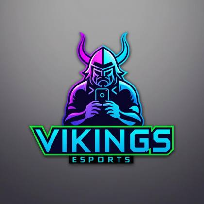
an esports neon logo of a viking with a cell phone | the text "VIKINGS" is under the logo

A [pizza slice] 3D rendering logo, unreal engine v5, very cute shape, miniature small scale painting style, minimalism, lite object style, up view, matte, white background, soft round form, ultra high definition details, 8k
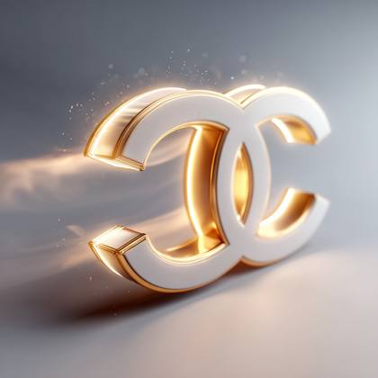
Create a realistic product ad featuring a claw machine fully themed with the Louis Vuitton visual identity. The machine matches the brand’s signature colors, fonts, and style. Inside the claw machine are multiple copies of the brand’s most iconic product. The claw is grabbing one of them in the center. One product has already been won and is visible in the drop chute at the bottom of the machine. The brand name appears clearly on the top of the machine. Add a short, clever slogan and the brand logo outside the machine at the bottom right. Use vibrant studio lighting, soft pastel background, clean composition, realistic textures and shadows. Style it like a luxury commercial photography shot — high-end but colorful and eye-catching

Elegant and refined 3D render of YouTube, TikTok, Twitter, and Instagram logos arranged side-by-side as app icons, emphasizing graceful lines and sophisticated features.

Dallas Cowboys helmet vs. Philadelphia Eagles helmet
Surreal infrared toned watercolor painting in a dramatic cinematic style, depicting popular social media logos as neon icons, translucent washes, fluid brushstrokes, film-like composition and lighting, infrared spectrum, otherworldly appearance.

shoe icon, logo, black background, clean and modern look, photorealistic style, vibrant and gradient colors, neon LED outline
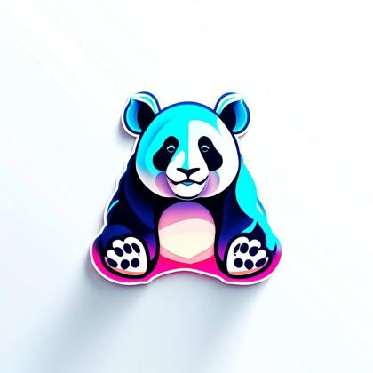
panda icon, white background, clean look, photorealistic style, peaceful and gradient colors

4 png images, vector illustration pack, knolling style, no border, png white background, technology, in the style of animated illustrations, futuristic atmospher, full body
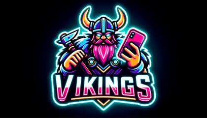
an esports neon logo of a viking with a cell phone | the text VIKINGS is under the logo
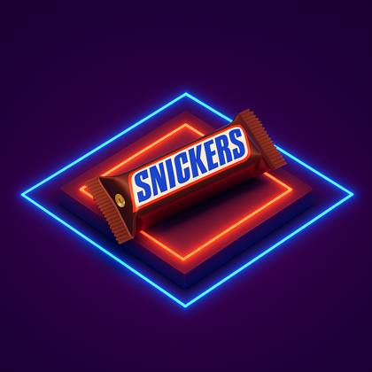
Create image Isometric 3d ad for [PRODUCT] , minimal, centric, brand guidelines, whimsical, neon aesthetics, professional ad

A captivating logo featuring a majestic fox. The fox is portrayed with !sleek and powerful! lines, capturing its commanding presence and grace. The neon effect imbues the logo with a vibrant and futuristic look. The logo is designed in a !striking and dynamic style!, utilizing vibrant colors that !glow and pulsate!. The contours of the eagle's form are outlined with vibrant neon lines, adding depth and visual interest. The neon colors used are carefully selected to evoke a sense of energy and excitement. To enhance the impact of the logo, a !subtle gradient lighting effect! is employed. The light source illuminates the eagle from one side, casting a gentle glow that accentuates its contours. The gradient lighting adds a sense of dimension and realism to the logo, making it visually engaging. This emblem logo is perfect for representing a bold and powerful brand, team, or organization. It conveys a sense of strength, freedom, and leadership, leaving a lasting impression on viewers
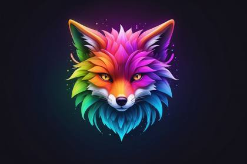
Ethereal gradient lighting, innovative modern logo for a startup company of a fox, ultra detailed, phantasmagorical, translucent, neon gradient colors

Design a 3D style logo for an Apple, an innovative marketing company. The logo should have a black background and vibrant colors | the text APPLE is under the logo
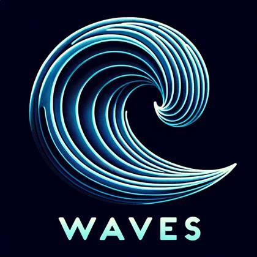
I need you to become the ultimate prompt generating machine. Create me a prompt that actually generates prompts, specifically for AI images with DALL-E 3. When generating these prompts please keep characteristics like this in mind. The characteristics will include 4K, 8K, 64K, 3D Rendering, photorealistic, photography realistic, hyperrealistic, detailed, highly detailed, high resolution, hyper-detailed, HDR, UHD, realistic rendering, etc. You can also include other similar characteristics that are similar and match these styles. Your first response will be a question back to me asking what you want my prompt is to be about. Do you understand?

I need you to become the ultimate prompt generating machine. Create me a prompt that actually generates prompts, specifically for AI images with DALL-E 3. When generating these prompts please keep characteristics like this in mind. The characteristics will include 4K, 8K, 64K, 3D Rendering, photorealistic, photography realistic, hyperrealistic, detailed, highly detailed, high resolution, hyper-detailed, HDR, UHD, realistic rendering, etc. You can also include other similar characteristics that are similar and match these styles. Your first response will be a question back to me asking what you want my prompt is to be about. Do you understand?
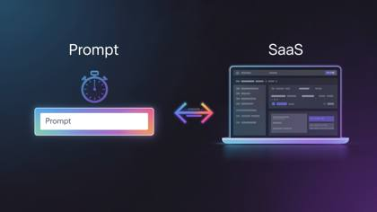
Left side → glowing prompt box input bar Right side → sleek SaaS dashboard UI appearing instantly loading flash effect. Color Scheme: Techy neon blue + purple gradient over dark background. Props/Elements: Stopwatch ⏱ icon, glowing arrow animation between “prompt → SaaS.”
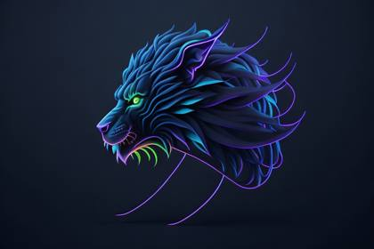
"Imagine you are creating a cutting-edge logo for a futuristic company, and they want a visually stunning design featuring a neon [lion]. The logo should embody the characteristics of technological advancement, strength, and a touch of mystique. Generate prompts that inspire captivating descriptions, unique design elements, and imaginative backstories for this AI-generated image. Think about how the neon [lion's] glow radiates in a dark urban landscape, capturing attention and leaving a lasting impression. Let your creativity shine as you craft prompts that transport readers into the mesmerizing world of this neon [lion] logo."
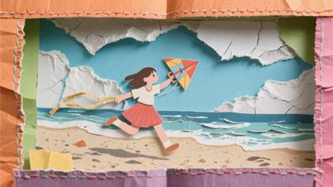
A paper cut-out collage of a girl flying a kit on the beach, assembled from layered torn paper with visible fibers and textured edges. Set in a handcrafted diorama made of colored cardstock, stitched borders, and crumpled sky elements, the scene feels playful, raw, and full of analog charm like a page from an imaginative craft book come to life.

Act as a digital art curator with expertise in AI-generated images. Create innovative and intriguing prompts tailored to DALL-E. Each prompt should inspire unique, visually striking photorealistic, hyperrealistic, UHD, 8K, realistic rendering images that push the boundaries of machine creativity. I will upload an image and you will inspect it intensely, specifically gathering each detail of the photo so you can provide me with a series of prompts so I can then generate a similar image. After your inspection, you will then ask me to upload the image. Do you understand?
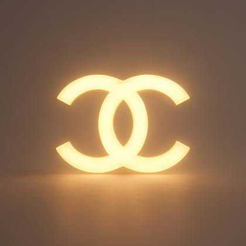
Ultra-realistic cinematic 3D render of a glowing Chanel logo floating in the center of a soft warm-gray background. The logo emits a focused golden glow with clearly defined edges and subtle internal illumination. The background is clean and neutral, allowing full contrast and separation. The logo appears suspended in space, with slight volumetric fog to enhance depth. Minimalist, elegant, macro detail, centered composition
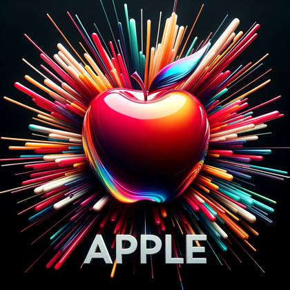
A shiny apple bursting with radiant colors symbolizing creativity with the word "APPLE" in a contemporary style below. d
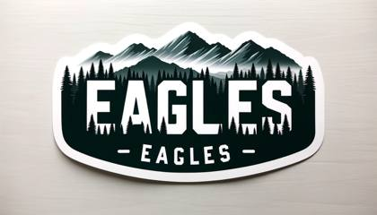
Custom sticker design on an isolated white background with the bold words "EAGLES" with a backdrop of a mountain range and silhouettes of pine trees

An electrifying neon logo of the letter "M" embodying modernity and vibrancy. The design style employs neon tube lighting, giving the letter a luminous glow that stands out against the dark background. The logo features a !soft neon flicker effect, adding a dynamic touch that captures attention and enhances the overall allure.
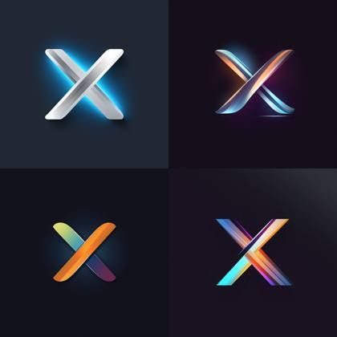
A dynamic vector logo of the letter "X" exemplifying boldness and simplicity.The design style features clean lines and geometric precision, emphasizing the letter's distinct shape.The logo is accentuated with !sharp, direct lighting from above!, illuminating the letter with clarity and creating a strong visual impact.

icon of a baobab tree inside of bulb light, creative logo, no outline, vector, white background, 3D render, hyper realistic,
A 3D app icon featuring YouTube, TikTok, Twitter, and Instagram logos side-by-side, using vibrant complementary colors and creative light art, showcasing abstract patterns, contrasting colors, and balanced tones.

an esports neon logo of a viking with a cell phone | the text "VIKINGS" is under the logo, white background, clean moder look, photorealistic, peaceful and gradient colors
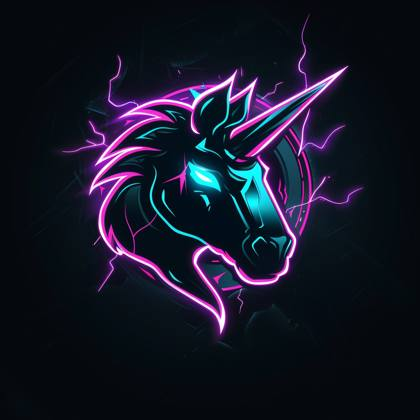
e-sports logo of a cosmic mule | neon lightnings surrounding | black background
logo for AI product analyzer plugin for shopify. it's called AI Product Analyzer, nothing fancy. so make something cool that implies an AI aesthetic
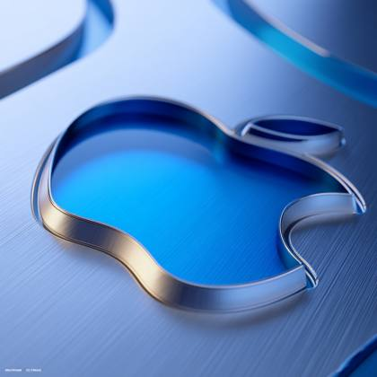
Create a sleek, modern 3D version of apple logo design with metallic silver and electric blue color gradient, geometric angular forms, intricate depth and shadowing, high-resolution 3D render, cinema4d style, photorealistic lighting, isometric perspective, detailed surface reflection and texture, professional branding aesthetic, 8k resolution, crisp clean edges Keep the layout of the logo exactly the same.
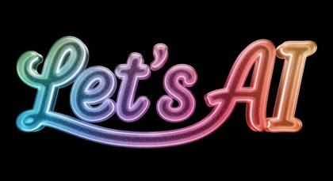
Create a 3D-rendered digital image of the word "Let's AI" in a connected, script-style layout where each letter flows smoothly into the next. The letters should be thick, rounded, and tubular, with a grainy surface and a slightly translucent material that allows subtle light to pass through while still appearing solid. Apply a vibrant, multicolor gradient transitioning across the full word, and add soft glitter-like texturing across the surface. Include a subtle inner glow within each letter to create a soft internal illumination. Use realistic lighting to emphasize the translucent quality and enhance the depth, color transitions, and subtle sparkles. The text should appear centered and floating in space with no shadows or reflections beneath it. Black background. Square aspect ratio

icon of a laptop computer, in the style of a logo, gradient colors of purples and blues

3d vector set of Christmas icons., in the style of atey ghailan, mixes realistic and fantastical elements, candycore, realistic and hyper-detailed renderings, low poly, soft, muted color palette, isolate on white
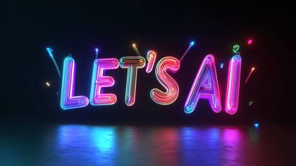
3D text "LET'S AI" made of lasers, on a black background, in vibrant colors, in the style of a cartoon, with simple shapes, in a flat design, as digital art, bright color scheme --ar 16:9

A vibrant, sleek apple symbol representing innovation and marketing with the bold text "APPLE" below.

A vibrant esports logo illuminated in neon colors, showcasing a mule adorned with purple headphones, accompanied by the bold "MULE SEO" text underneath.

3d vector set of Birthday icons., in the style of atey ghailan, mixes realistic and fantastical elements, candycore, realistic and hyper-detailed renderings, low poly, soft, muted color palette, isolate on white

4 png images, vector illustration pack, knolling style, no border, png white background, people outside, in the style of animated illustrations, park atmosphere, full body --style raw
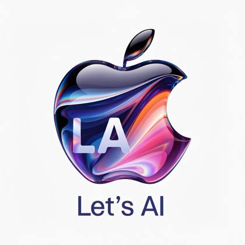
a vibrant apple app icon in gradient colors of blue, purple, pink and orange with the letters "LA" and the text "Let's AI" beneath it. Genre is tech and modern, clean
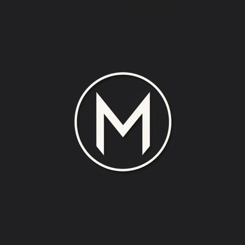
A captivating logo design featuring the letter "M" as the central element. The design should be visually appealing and memorable, capturing the essence of the brand or company it represents. The letter "M" should be creatively stylized, incorporating unique and artistic elements. It could be transformed into an abstract shape, incorporating curves, angles, or other design elements that add visual interest. The style can be modern, minimalist, or ornate, depending on the desired brand image. [d2] The logo is designed using a combination of digital techniques and hand-drawn elements. The artist pays careful attention to the details of the letterform, enhancing its shape and character. Various stylistic techniques can be employed, such as using gradients, textures, or patterns within the letter "M" to add depth and visual appeal. The choice of colors should complement the brand's identity and convey the intended message. [d3] To enhance the logo's impact, a subtle and strategic use of lighting is employed. Soft and diffused lighting casts a gentle illumination on the letter "M," adding depth and dimension to the design. Shadows may be used to create a sense of depth and three-dimensionality. The lighting should accentuate the contours and details of the letterform, creating an eye-catching and professional logo.

Create an image of a neon green dollar sign with a glowing, electric aura around it. The sign is centered on a dark, almost black background. The glow should be intense and vibrant, resembling a powerful energy. The aura around the dollar sign should have dynamic, crackling effects like electricity or energy, making the sign appear charged and full of power. The neon green should be the sole source of light in the image, casting a slight illumination on the surrounding darkness but not fully dispelling the shadows. The overall atmosphere should be one of energy and intensity, with the dollar sign as the focal point of the composition
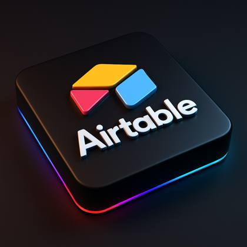
Create Image: A 3D-rendered digital image of the Airtable logo is placed on a sleek, matte black square platform with rounded corners. The logo appears glossy and slightly raised, centered perfectly on the platform. RGB light strips subtly illuminate the platform edges, casting a soft glow on the surrounding dark gradient background. Shot from a slightly elevated angle with studio lighting, clean shadows, and high detail, minimalistic, modern, tech branding style.

"A stunning 3D logo of the letter ""M"" !showcasing depth and dimension!. The art style leverages advanced 3D modeling and rendering techniques, giving the letter a realistic and tangible appearance, as if it's emerging from the surface. The logo is creatively lit with !dramatic spotlighting from below!, creating captivating shadows that add a sense of drama and visual interest."

3d vector set of Halloween icons., in the style of atey ghailan, mixes realistic and fantastical elements, candycore, realistic and hyper-detailed renderings, low poly, soft, muted color palette, isolate on white

A dynamic vector logo of the letter "X" exemplifying boldness and simplicity.The design style features clean lines and geometric precision, emphasizing the letter's distinct shape.The logo is accentuated with !sharp, direct lighting from above!, illuminating the letter with clarity and creating a strong visual impact.
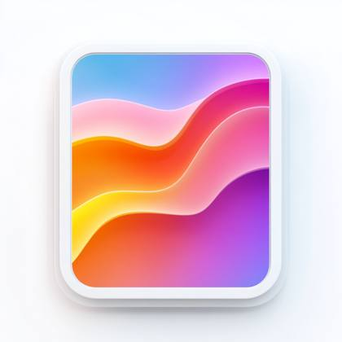
iPhone app copy icon, white background, clean look, photorealistic style, peaceful and gradient colors
Conceptual 3D app icon design: side-by-side presentation of split YouTube, TikTok, Twitter, and Instagram logos. The design uses bold forms, abstract patterns, creative light art style, and sharp contrasts in lighting and color.
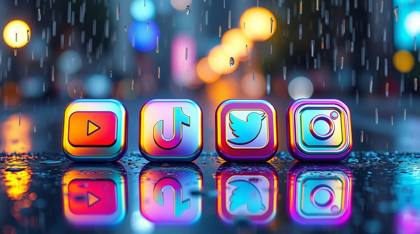
Iridescent colors shimmer over a wet rainy scene featuring 3D app icons for YouTube, TikTok, Twitter, and Instagram side-by-side. Drizzling rain and reflective surfaces create iridescent reflections.
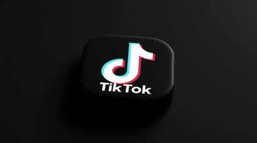
A 3D TikTok app icon rendered in intense jet black with deep shadows high angle perspective creating a pure black aesthetic.

an esports neon logo of a viking with a cell phone | the text "VIKINGS" is under the logo
Gentle soft light and a dreamy atmosphere envelop 3D app icons for YouTube, TikTok, Twitter, and Instagram arranged side-by-side. Hazy soft light, diffused shadows, and subtle illumination are present.

3d vector set of Birthday icons., in the style of atey ghailan, mixes realistic and fantastical elements, candycore, realistic and hyper-detailed renderings, low poly, soft, muted color palette, isolate on white
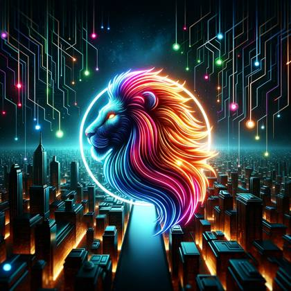
Imagine you are creating a cutting-edge logo for a futuristic company, and they want a visually stunning design featuring a [neon lion]. The logo should embody the characteristics of technological advancement, strength, and a touch of mystique. Generate prompts that inspire captivating descriptions, unique design elements, and imaginative backstories for this AI-generated image. Think about how the [neon lion's] glow radiates in a dark urban landscape, capturing attention and leaving a lasting impression, accompanied by the bold "LION" text underneath.
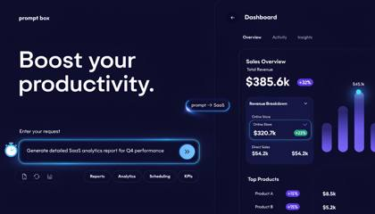
Left side → glowing prompt box input bar Right side → sleek SaaS dashboard UI appearing instantly loading flash effect. Color Scheme: Techy neon blue + purple gradient over dark background. Props/Elements: Stopwatch ⏱ icon, glowing arrow animation between “prompt → SaaS.”
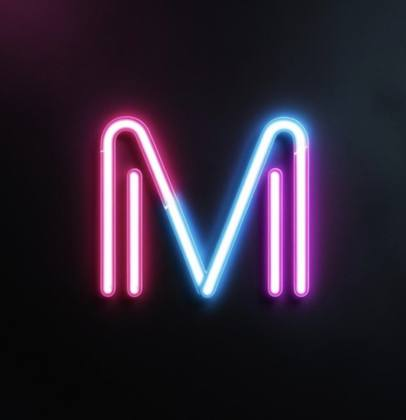
An electrifying neon logo of the letter "M" embodying modernity and vibrancy. The design style employs neon tube lighting, giving the letter a luminous glow that stands out against the dark background. The logo features a !soft neon flicker effect, adding a dynamic touch that captures attention and enhances the overall allure.

line art logo of [an eagle], thin red color lines, minimal, white background

"Act as a digital logo curator with expertise in AI-generated images. Create innovative and intriguing prompts tailored for the AI image-generating tool DALL-E 3. Each prompt should inspire unique, visually striking logos and words that push the boundaries of machine creativity. Below I will provide you with three commands: "words", "subject", and "style"". "Words" is the word that I want you to generate that will be placed below the subject. ""Subject"" is the item or subject I want you to create. ""Style"" will be the style and characteristics of the image, for example "neon" or "photorealistic" Words: Subject: Style: "

"A captivating logo design featuring the word ""Mule"" as the central element. The design should be visually appealing and memorable, capturing the essence of the brand or company it represents. The word "Mule" should be creatively stylized, incorporating unique and artistic elements. It could be transformed into an abstract shape, incorporating curves, angles, or other design elements that add visual interest. The style can be modern, minimalist, or ornate, depending on the desired brand image. [d2] The logo is designed using a combination of digital techniques and hand-drawn elements. The artist pays careful attention to the details of the letterform, enhancing its shape and character. Various stylistic techniques can be employed, such as using gradients, textures, or patterns within the word ""Mule"" to add depth and visual appeal. The choice of colors should complement the brand's identity and convey the intended message. [d3] To enhance the logo's impact, a subtle and strategic use of lighting is employed. Soft and diffused lighting casts a gentle illumination on the word ""Mule,"" adding depth and dimension to the design. Shadows may be used to create a sense of depth and three-dimensionality. The lighting should accentuate the contours and details of the letterform, creating an eye-catching and professional logo." "An electrifying neon logo of the word [FOX] embodying modernity and vibrancy! The design style employs neon tube lighting, giving the letter a luminous glow that stands out against the dark background. The logo features a !soft neon flicker effect, adding a dynamic touch that captures attention and enhances the overall allure."
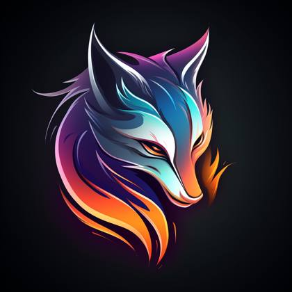
A captivating logo featuring a majestic fox. The fox is portrayed with !sleek and powerful! lines, capturing its commanding presence and grace. The neon effect imbues the logo with a vibrant and futuristic look. The logo is designed in a !striking and dynamic style!, utilizing vibrant colors that !glow and pulsate!. The contours of the eagle's form are outlined with vibrant neon lines, adding depth and visual interest. The neon colors used are carefully selected to evoke a sense of energy and excitement. To enhance the impact of the logo, a !subtle gradient lighting effect! is employed. The light source illuminates the eagle from one side, casting a gentle glow that accentuates its contours. The gradient lighting adds a sense of dimension and realism to the logo, making it visually engaging. This emblem logo is perfect for representing a bold and powerful brand, team, or organization. It conveys a sense of strength, freedom, and leadership, leaving a lasting impression on viewers

fox icon, white background, clean look, photorealistic style, peaceful and gradient colors
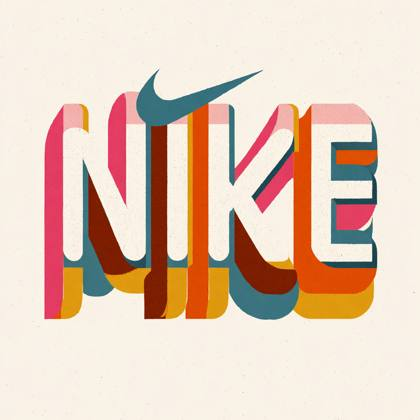
Recreate the "Nike" logo in the style of retro 1970s graphic design. Use bold, chunky geometric type with rounded letterforms and playful curves inspired by 70s-era branding. Incorporate recognizable elements from the original logo, such as the color palette, layout, or shapes, but reimagine them with a vintage aesthetic. If an icon is included, it should be small and visually balanced with the text, no larger than the lettering. The result should feel like it belongs in a 1970s magazine ad, signage, or record label. Keep it flat, minimalist, high-contrast, and vector-friendly. No gradients or shadows. White background.

Ethereal gradient lighting, innovative modern logo for a startup company of a fox, ultra detailed, phantasmagorical, translucent, neon gradient colors

A shiny apple bursting with radiant colors symbolizing creativity with the word "APPLE" in a contemporary style below. d
Mystical ethereal image of YouTube, TikTok, Twitter, and Instagram logos as 3D app icons side-by-side, enveloped in a soft light aura, conveying a spiritual vibe.

esports neon logo | a lion with headphones | flat illustration | synthwave palette | dark plain background --style 4OUUBj8S --v 5.2

icon of a baobab tree inside of bulb light, creative logo, no outline, vector, white background, 3D render, hyper realistic,

A striking logo of the letter "M" inspired by nature and simplicity. The art style adopts a combination of digital painting and vector illustration, providing a balance between organic curves and precise geometry. The logo is set against a !gradually changing background gradient of warm to cool tones! to evoke a sense of elegance and versatility.

A vibrant, sleek apple symbol representing innovation and marketing with the bold text "APPLE" below.

A vibrant, sleek fox symbol representing innovation and marketing with the bold text "SILO" below.
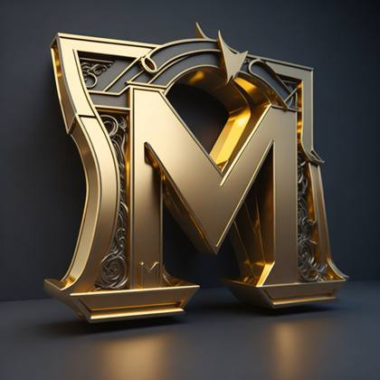
A captivating logo design featuring the letter "M" as the central element. The design should be visually appealing and memorable, capturing the essence of the brand or company it represents. The letter "M" should be creatively stylized, incorporating unique and artistic elements. It could be transformed into an abstract shape, incorporating curves, angles, or other design elements that add visual interest. The style can be modern, minimalist, or ornate, depending on the desired brand image. [d2] The logo is designed using a combination of digital techniques and hand-drawn elements. The artist pays careful attention to the details of the letterform, enhancing its shape and character. Various stylistic techniques can be employed, such as using gradients, textures, or patterns within the letter "M" to add depth and visual appeal. The choice of colors should complement the brand's identity and convey the intended message. [d3] To enhance the logo's impact, a subtle and strategic use of lighting is employed. Soft and diffused lighting casts a gentle illumination on the letter "M," adding depth and dimension to the design. Shadows may be used to create a sense of depth and three-dimensionality. The lighting should accentuate the contours and details of the letterform, creating an eye-catching and professional logo.
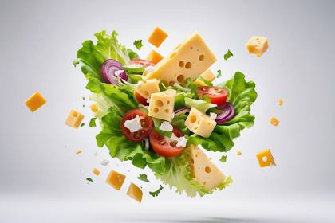
salad flying through the air with cheese and lettuce, Editorial Photography, Photography, Shot on 70mm lens, Depth of Field, Bokeh, DOF, Tilt Blur, Shutter Speed 1/1000, F/22, White Balance, 32k, Super-Resolution, white background
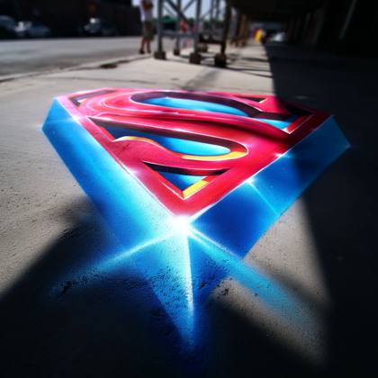
IMG\_1234.ARW: super man logo
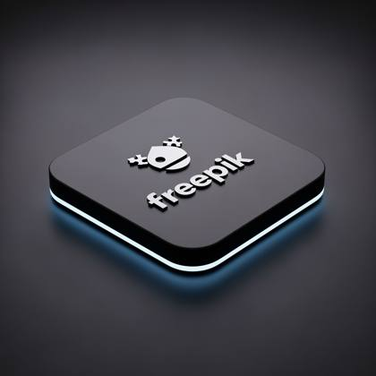
A 3D-rendered digital image of the [LOGO] is placed on a sleek, matte black square platform with rounded corners. The logo appears glossy and slightly raised, centered perfectly on the platform. RGB light strips subtly illuminate the platform edges, casting a soft glow on the surrounding dark gradient background. Shot from a slightly elevated angle with studio lighting, clean shadows, and high detail, minimalistic, modern, tech branding style.
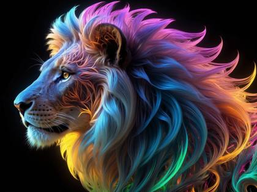
Spiraliverse neon fractal lighting flame lion

an esports neon logo of a viking with a cell phone | the text VIKINGS is under the logo
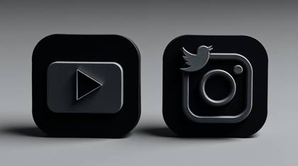
Intricate origami style, strong moody style, low contrast. YouTube, TikTok, Twitter, Instagram logos, 3D, app icon format, side-by-side. Folded paper look, geometric precision.
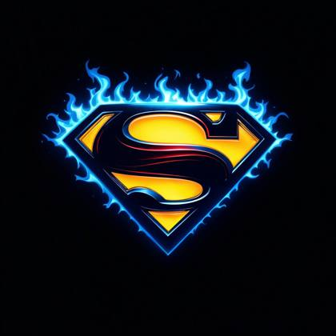
superman logo in a powerful look, gradient shades of blue flames surrounding it
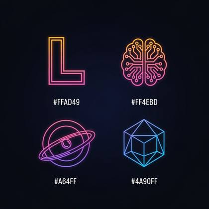
A minimalist neon logo set featuring four symbols on a dark background: a bold stylized 'L', a neural brain icon with circuit nodes, a glowing ring with a central dot, and a geometric hexagon/cube all using a gradient blend of orange (#FFAD49), pink (#FF4EBD), purple (#A64AFF), and blue (#4A90FF). Glowing outlines, futuristic, AI branding aesthetic, centered, sharp detail, modern vector icon style

Act as a digital art curator with expertise in AI-generated images. Create innovative and intriguing prompts tailored DALL-E. Each prompt should inspire unique, visually striking photorealistic, hyperrealistic, UHD, 8K, realistic rendering images that push the boundaries of machine creativity. I will upload an image and you will inspect it intensely, specifically gathering each detail of the photo so you can provide me with a series of prompts so I can then generate a similar image. After your inspection, you will then ask me to upload the image. Do you understand?
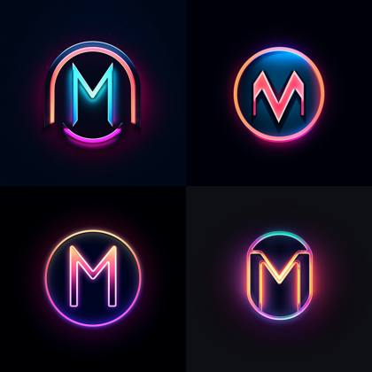
An electrifying neon logo of the letter "M" embodying modernity and vibrancy. The design style employs neon tube lighting, giving the letter a luminous glow that stands out against the dark background. The logo features a !soft neon flicker effect, adding a dynamic touch that captures attention and enhances the overall allure.

A charming and whimsical fashion illustration of a delicate doll-like girl standing against a textured paper backdrop with a hand-drawn city skyline, including the Empire State Building and Tokyo Tower. The character has a soft and romantic expression, with closed eyes, lightly blushed cheeks, and peach-toned lips. Her hairstyle is a loose, messy bun with soft strands of light brown hair gently framing her face. She wears a textured pink wool coat with large buttons and wide cuffs, layered over a light brown blouse and a high-waisted dark green mini skirt. The coat’s texture is highly detailed, showing a tactile, tweed-like fabric. She holds a tiny handbag with a gold clasp in her right hand, matching her vintage and playful style. On her feet are delicate high-heeled sandals with thin straps. Around her are hand-drawn pink hearts and real elements such as pink and orange macarons, soft peach-colored flowers, and a paintbrush, blending illustration and real-world textures seamlessly. The lighting is soft and pastel-toned, enhancing the dreamy, feminine mood. The image uses a vertical aspect ratio (3:2), ideal for modern fashion illustration or character concept design. The overall style is a fusion of handmade textile art, city romance, and cute fashion storytelling.
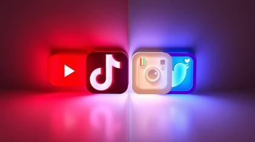
A distinct creative light art piece featuring YouTube, TikTok, Twitter, and Instagram logos side-by-side as 3D app icons. The design incorporates artistic lighting, abstract patterns, divided sections, and bold areas.

A vibrant, abstract vector logo of a fox with a bright orange and yellow gradient.
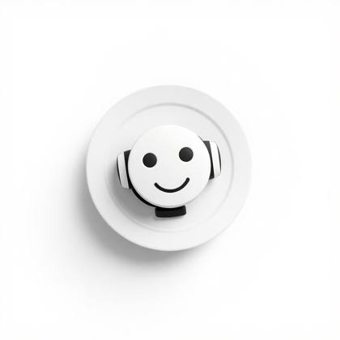
iPhone app copy icon, ai bot, white background, clean look, photorealistic style, peaceful and gradient colors

"Design a sleek and captivating neon lion logo using AI techniques. Create a high-resolution image with characteristics like 4K, 8K, or even 64K resolution, emphasizing the neon aesthetic and photorealistic rendering.Craft a lion symbol that embodies strength, power, and majesty, while incorporating a futuristic and vibrant neon style. Experiment with different neon color palettes, such as electric blues, vibrant pinks, or glowing greens, to create a visually striking and eye-catching effect.Pay attention to details, ensuring the logo is highly detailed and hyperrealistic, capturing the intricate features of the lion's face, mane, and eyes. Consider using advanced rendering techniques to add depth, shadows, and highlights, enhancing the logo's three-dimensional appearance.Explore different design elements, such as geometric shapes, abstract lines, or dynamic patterns, to complement the neon lion. Incorporate a sense of motion or energy into the logo, giving it a modern and dynamic feel

panda icon, white background, clean look, photorealistic style, peaceful and gradient colors
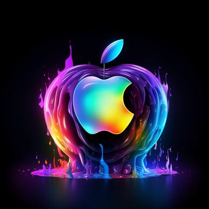
Act as a digital art curator with expertise in AI-generated images. Create innovative and intriguing prompts tailored to DALL-E. Each prompt should inspire unique, visually striking photorealistic, hyperrealistic, UHD, 8K, realistic rendering images that push the boundaries of machine creativity. I will upload an image and you will inspect it intensely, specifically gathering each detail of the photo so you can provide me with a series of prompts so I can then generate a similar image. After your inspection, you will then ask me to upload the image. Do you understand?

"[Rugby player running with the ball] in the dark, in the style of photo-realistic landscapes, 8k, master of ink, ultra hd, [red and blue]"

A captivating logo design featuring the letter "M" as the central element. The design should be visually appealing and memorable, capturing the essence of the brand or company it represents. The letter "M" should be creatively stylized, incorporating unique and artistic elements. It could be transformed into an abstract shape, incorporating curves, angles, or other design elements that add visual interest. The style can be modern, minimalist, or ornate, depending on the desired brand image. [d2] The logo is designed using a combination of digital techniques and hand-drawn elements. The artist pays careful attention to the details of the letterform, enhancing its shape and character. Various stylistic techniques can be employed, such as using gradients, textures, or patterns within the letter "M" to add depth and visual appeal. The choice of colors should complement the brand's identity and convey the intended message. [d3] To enhance the logo's impact, a subtle and strategic use of lighting is employed. Soft and diffused lighting casts a gentle illumination on the letter "M," adding depth and dimension to the design. Shadows may be used to create a sense of depth and three-dimensionality. The lighting should accentuate the contours and details of the letterform, creating an eye-catching and professional logo.
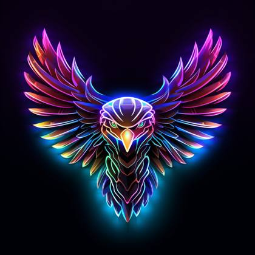
A captivating logo featuring a majestic eagle in a stunning neon style. The eagle is portrayed with !sleek and powerful! lines, capturing its commanding presence and grace. The neon effect imbues the logo with a vibrant and futuristic look. The logo is designed in a !striking and dynamic style!, utilizing neon colors that !glow and pulsate!. The contours of the eagle's form are outlined with vibrant neon lines, adding depth and visual interest. The neon colors used are carefully selected to evoke a sense of energy and excitement. To enhance the impact of the logo, a !subtle gradient lighting effect! is employed. The light source illuminates the eagle from one side, casting a gentle glow that accentuates its contours. The gradient lighting adds a sense of dimension and realism to the logo, making it visually engaging. This emblem logo is perfect for representing a bold and powerful brand, team, or organization. It conveys a sense of strength, freedom, and leadership, leaving a lasting impression on viewers

Beautiful otherworldly Xbox controller Made of Mandelbrot selective color Ombré 3D glass Appear at dusk, day's end, Shot through a beautiful Tilt-shift blur lens

Imagine you are creating a cutting-edge logo for a futuristic company, and they want a visually stunning design featuring a [neon lion]. The logo should embody the characteristics of technological advancement, strength, and a touch of mystique. Generate prompts that inspire captivating descriptions, unique design elements, and imaginative backstories for this AI-generated image. Think about how the [neon lion's] glow radiates in a dark urban landscape, capturing attention and leaving a lasting impression, accompanied by the bold "LION" text underneath.

fox icon, white background, clean look, photorealistic style, peaceful and gradient colors
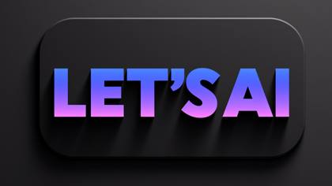
The stylized, bold, and modern sans-serif text "LET'S AI" in a mesmerizing gradient of deep blues, rich purples, and vibrant pinks, with a gradual shift from darker to lighter hues, on a solid, matte, and sleek black background that provides a sophisticated contrast, with the letters overlapping slightly to create a sense of depth and dimensionality, and the overall design exuding a sense of luxury, innovation, and creativity.
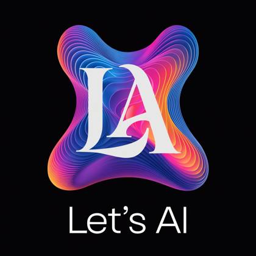
a vibrant app icon in gradient colors of blue, purple, pink and orange with the letters "LA" and the text "Let's AI" beneath it. Genre is tech and modern, clean, background is black
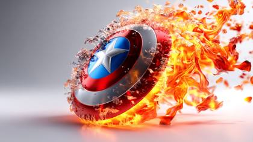
the shield of a super hero, captain america, magazine editorial style photoshoot, the shield is facing forward, front and center appearing powerful as if it were popping off the page in 3d, it's outlined in flames signifying its power, white background
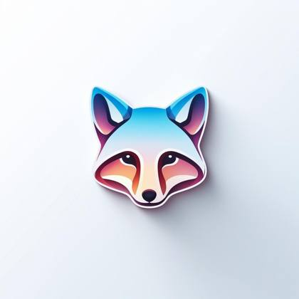
fox icon, white background, clean look, photorealistic style, peaceful and gradient colors
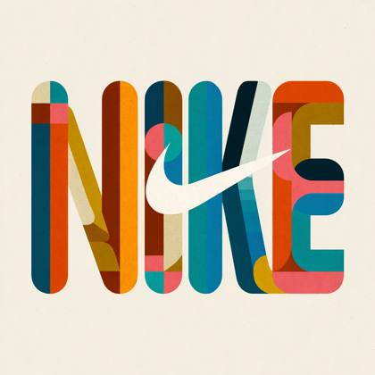
Recreate the "Nike" logo in the style of retro 1970s graphic design. Use bold, chunky geometric type with rounded letterforms and playful curves inspired by 70s-era branding. Incorporate recognizable elements from the original logo, such as the color palette, layout, or shapes, but reimagine them with a vintage aesthetic. If an icon is included, it should be small and visually balanced with the text, no larger than the lettering. The result should feel like it belongs in a 1970s magazine ad, signage, or record label. Keep it flat, minimalist, high-contrast, and vector-friendly. No gradients or shadows. White background. Square aspect ratio.

isometric pirate cove, RPG scene, unreal engine, dark background --style raw
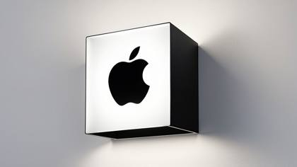
A modern, perfect cube lightbox sign protruding from a simple urban wall, illuminated from within. This high-angle view shows three faces of the cube. Iconic [Apple] logo in black against a bright white background on front face. The adjacent face, visible from this angle, features the text '[APPLE]' in bold. The top face is empty. The cube's design is sleek and minimalistic, casting a soft glow around its edges, ideal for a contemporary tech-oriented setting.

an esports neon logo of a viking with a cell phone | the text "VIKINGS" is under the logo, white background, clean moder look, photorealistic, peaceful and gradient colors

the most popular social media icons, X, facebook, tik tok, instagram, youtube
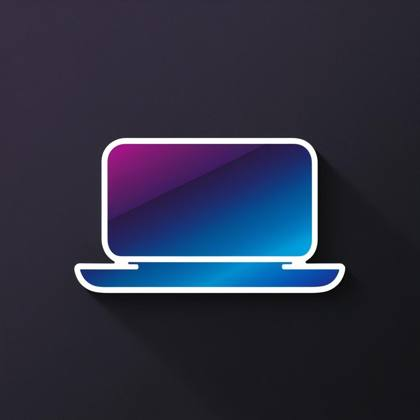
icon of a laptop computer, in the style of a logo, gradient colors of purples and blues
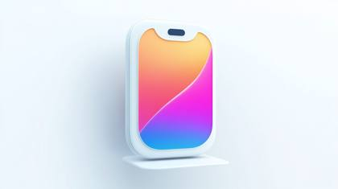
iPhone app copy icon, ai bot, white background, clean look, photorealistic style, peaceful and gradient colors
A vibrant esports logo illuminated in neon colors, showcasing a mule adorned with purple headphones, accompanied by the bold "MULE SEO" text underneath.

esports neon logo | a gorilla with headphones | flat illustration | synthwave palette | dark plain background --style 1Ut3oChIK --v 5.2
A captivating logo design featuring the word "metricsmule" in modern Google-Style font as the central element. The design should be visually appealing and memorable, capturing the essence of the brand or company it represents. The word "metricsmule should be creatively stylized, incorporating unique and artistic elements. It could be transformed into an abstract shape, incorporating curves, angles, or other design elements that add visual interest. The style can be modern, minimalist, or ornate, depending on the desired brand image.
A modern, perfect cube lightbox sign protruding from a simple urban wall, illuminated from within. This high-angle view shows three faces of the cube. Iconic [Apple] logo in black against a bright white background on front face. The adjacent face, visible from this angle, features the text '[APPLE]' in bold. The top face is empty. The cube's design is sleek and minimalistic, casting a soft glow around its edges, ideal for a contemporary tech-oriented setting.

Custom sticker design on an isolated white background with the bold words "EAGLES" with a backdrop of a mountain range and silhouettes of pine trees

sticker, white background,panda cute stir,contour,colorful,vector,kawaii

line art logo of [an eagle], thin red color lines, minimal, white background

image of a gradient background with the word FLUX
Retro CRT computer boot screen that resolves into ASCII-art of Google logo

A high-resolution, digital art image featuring the word 'MULE' in the center of the frame. The text should be large, bold, and in a clean, modern, sans-serif font, such as Arial or Helvetica. The letters should be metallic gold in color with a slightly reflective surface. The background should be a plain, solid black color, making the golden text stand out clearly. Ensure that the word 'MULE' is the main focus of the image and is easily readable.

Design a 3D style logo for an Apple, an innovative marketing company. The logo should have a black background and vibrant colors | the text APPLE is under the logo

Mango half and sliced isolated on a pure white background
A distinct creative light art piece featuring YouTube, TikTok, Twitter, and Instagram logos side-by-side as 3D app icons. The design incorporates artistic lighting, abstract patterns, divided sections, and bold areas.
iOS icon app, gradient blue and purple, mascot of mule, with the word "MULE" in realistic 3d letters

4 png images, vector illustration pack, knolling style, no border, png white background, technology, in the style of animated illustrations, futuristic atmospher, full body --style raw --ar 16:9 -
fox icon, white background, clean look, photorealistic style, peaceful and gradient colors

a closeup photo of a [X], isolated on a transparent white background --style raw --stylize 150 1\. a colorful parrot in flight 2\. a ripe strawberry 3\. a delicious burger 4\. a potted flowering plant 5\. a father reading to his child 6\. a stack of textbooks 7\. a young child blowing bubbles 8\. a goldfish swimming 9\. an athlete running on a track
3d vector set of Christmas icons., in the style of atey ghailan, mixes realistic and fantastical elements, candycore, realistic and hyper-detailed renderings, low poly, soft, muted color palette, isolate on white

Stunning logo for marketing agency, using a [fox] face to face, minimalist style, vibrant, uх, ui,

iPhone app style collection of the most popular social media icons, white background, clean look, photorealistic style, peaceful and gradient colors

Ethereal gradient lighting, innovative modern logo for a startup company of a small fox peaking over a wave, ultra detailed, phantasmagorical, translucent, neon gradient colors
Recreate the "Coca Cola" logo in the style of retro 1980s graphic design. Use bold, chunky geometric type with rounded letterforms and playful curves inspired by 70s-era branding. Incorporate recognizable elements from the original logo, such as the color palette, layout, or shapes, but reimagine them with a vintage aesthetic. If an icon is included, it should be small and visually balanced with the text, no larger than the lettering. The result should feel like it belongs in a 1970s magazine ad, signage, or record label. Keep it flat, minimalist, high-contrast, and vector-friendly. No gradients or shadows. White background. Square aspect ratio.
A low-angle, dramatic shot of 3D YouTube, TikTok, Twitter, and Instagram app icons side-by-side, warm golden glow, radiant and luxurious, looking up.

4 png images, vector illustration pack, knolling style, no border, png white background, gradient, logos of a fox, futuristic, in the style of animated illustrations, futuristic atmospher, full body

Xbox controller with light flares in the background, in the style of innovating techniques and overexposure effect, streaked, speed and motion, contest winner, 8k 3d, bold saturation innovator, immersive gaming experience

4 png images, vector illustration pack, knolling style, no border, png white background, technology, in the style of animated illustrations, futuristic atmospher, full body --style raw --ar 16:9 -

Vibrant iconset icon for social media app, representing user interactions, clean icon design, modern, white background
esports neon logo | a lion with headphones | flat illustration | synthwave palette | dark plain background --style 4OUUBj8S --v 5.2
A high-resolution photograph of a clear plastic drawstring bag placed on a light gray background. Inside the bag are multiple tiny 3D [subject] figures arranged neatly. The bag is tied with a soft white ribbon and has a black label tag that reads ‘[LABEL TEXT]’. Soft lighting and clean shadows emphasize the realistic textures and details
A vibrant, abstract vector logo of a fox with a bright orange and yellow gradient.
Vivid neon outline of the Superman logo, with glowing energy waves emanating from its center. The background is dark and black to highlight the bright colors of the 'S' shield. A sleek digital art style

A YouTube thumbnail and an excited, beautiful woman. The background is dark gradient purple and blue with white highlights on various color pops In the style of a futuristic tech company

"Custom sticker design on an isolated black background with the words ""TheLegend27"" in bold font decorated by mythical dragons and a flaming sword. "
3D Rending, Dynamic Dallas Cowboys Helmet

email copy icon, white background, clean look, photorealistic style, peaceful and gradient colors

4 png images, vector illustration pack, knolling style, no border, png white background, technology, in the style of animated illustrations, futuristic atmospher, full body --style raw --ar 16:9 -
Create a flat, iconic logo for a brand called [metricsmule], which operates in the [AI industry] field. The logo must be simple, bold, and concept-driven. Use a purple, blue, orange, pink gradient color scheme. Incorporate abstract or symbolic shapes that represent the brand’s values or purpose — think clever geometry, subtle negative space, or minimal monograms. Place the brand name below the icon in modern sans-serif typography, centered and styled with the chosen colors. Use a clean white background. No shadows, no gradients. Final result should feel premium, unique, and instantly recognizable, like it belongs to a real, future-ready brand.
3d realistic avatar, png, vector, black and white, white background, illustration

an esports neon logo of a mule with purple headphones | the text MULE SEO is under the logo
3D rendered dog mask made of brushed aluminum, green blue color palette, white background --s 250
A high-resolution, digital art image featuring the word 'ROLEX' in the center of the frame. The text should be large, bold, and in a clean, modern, sans-serif font, such as Arial or Helvetica. The letters should be metallic gold in color with a slightly reflective surface. The background should be a plain, solid black color, making the golden text stand out clearly. Ensure that the word 'ROLEX' is the main focus of the image and is easily readable.
"Custom sticker design on an isolated black background with the words ""TheLegend27"" in bold font decorated by mythical dragons and a flaming sword. "
shoe icon, logo, black background, clean and modern look, photorealistic style, vibrant and gradient colors, neon LED outline
iPhone app copy icon, ai bot, white background, clean look, photorealistic style, peaceful and gradient colors

A captivating logo design featuring the letter "M" as the central element. The design should be visually appealing and memorable, capturing the essence of the brand or company it represents. The letter "M" should be creatively stylized, incorporating unique and artistic elements. It could be transformed into an abstract shape, incorporating curves, angles, or other design elements that add visual interest. The style can be modern, minimalist, or ornate, depending on the desired brand image. [d2] The logo is designed using a combination of digital techniques and hand-drawn elements. The artist pays careful attention to the details of the letterform, enhancing its shape and character. Various stylistic techniques can be employed, such as using gradients, textures, or patterns within the letter "M" to add depth and visual appeal. The choice of colors should complement the brand's identity and convey the intended message. [d3] To enhance the logo's impact, a subtle and strategic use of lighting is employed. Soft and diffused lighting casts a gentle illumination on the letter "M," adding depth and dimension to the design. Shadows may be used to create a sense of depth and three-dimensionality. The lighting should accentuate the contours and details of the letterform, creating an eye-catching and professional logo.
A mesmerizing esports neon logo of a viking warrior, rendered in 3D illustration, set against a vibrant, electric blue gradient background that evokes a sense of digital dynamism, situated in a sleek, futuristic cyberpunk-inspired cityscape at dusk, with skyscrapers and neon lights reflecting off the wet pavement, the viking proudly holding a glowing cell phone, surrounded by swirling aurora-like lights, as the bold, metallic silver text "VIKINGS" in a sharp, high-tech font emblazoned below, radiates an air of high-stakes gaming competition.
Create a highly detailed and vibrant neon light illustration of the Apple logo with a spectrum of rainbow colors on a dark background, with a glowing and fluid appearance, as if it is made of flowing light."
Modern flat design showing a 3D TikTok app icon featuring a smooth gradient transition. Simple, two-dimensional shapes, seamless color blending creates a graceful and elegant design with refined features.

A vibrant, sleek fox symbol representing innovation and marketing with the bold text "SILO" below.
A 3D TikTok app icon rendered in intense jet black with deep shadows high angle perspective creating a pure black aesthetic.

"Act as a digital logo curator with expertise in AI-generated images. Create innovative and intriguing prompts tailored for the AI image-generating tool DALL-E 3. Each prompt should inspire unique, visually striking logos and words that push the boundaries of machine creativity. Below I will provide you with three commands: "words", "subject", and "style"". "Words" is the word that I want you to generate that will be placed below the subject. ""Subject"" is the item or subject I want you to create. ""Style"" will be the style and characteristics of the image, for example "neon" or "photorealistic" Words: Subject: Style: "

Create a highly detailed and vibrant neon light illustration of the Apple logo with a spectrum of rainbow colors on a dark background, with a glowing and fluid appearance, as if it is made of flowing light."
3d vector set of Halloween icons., in the style of atey ghailan, mixes realistic and fantastical elements, candycore, realistic and hyper-detailed renderings, low poly, soft, muted color palette, isolate on white
A striking logo of the letter "M" inspired by nature and simplicity. The art style adopts a combination of digital painting and vector illustration, providing a balance between organic curves and precise geometry. The logo is set against a !gradually changing background gradient of warm to cool tones! to evoke a sense of elegance and versatility.
An apple silhouette filled with a luminous gradient of colors with the bold word "APPLE" displayed below.

"A captivating logo design featuring the word ""Mule"" as the central element. The design should be visually appealing and memorable, capturing the essence of the brand or company it represents. The word "Mule" should be creatively stylized, incorporating unique and artistic elements. It could be transformed into an abstract shape, incorporating curves, angles, or other design elements that add visual interest. The style can be modern, minimalist, or ornate, depending on the desired brand image. [d2] The logo is designed using a combination of digital techniques and hand-drawn elements. The artist pays careful attention to the details of the letterform, enhancing its shape and character. Various stylistic techniques can be employed, such as using gradients, textures, or patterns within the word ""Mule"" to add depth and visual appeal. The choice of colors should complement the brand's identity and convey the intended message. [d3] To enhance the logo's impact, a subtle and strategic use of lighting is employed. Soft and diffused lighting casts a gentle illumination on the word ""Mule,"" adding depth and dimension to the design. Shadows may be used to create a sense of depth and three-dimensionality. The lighting should accentuate the contours and details of the letterform, creating an eye-catching and professional logo." "An electrifying neon logo of the word [FOX] embodying modernity and vibrancy! The design style employs neon tube lighting, giving the letter a luminous glow that stands out against the dark background. The logo features a !soft neon flicker effect, adding a dynamic touch that captures attention and enhances the overall allure."
email copy icon, white background, clean look, photorealistic style, peaceful and gradient colors

flat vector logo of [a wave], blue, trending on Dribble, gradient color scheme, 3D white background

flat vector logo of [a wave], blue, trending on Dribble, gradient color scheme, 3D white background

an esports neon logo of a mule with purple headphones | the text MULE SEO is under the logo

A captivating logo featuring a majestic eagle in a stunning neon style. The eagle is portrayed with !sleek and powerful! lines, capturing its commanding presence and grace. The neon effect imbues the logo with a vibrant and futuristic look. The logo is designed in a !striking and dynamic style!, utilizing neon colors that !glow and pulsate!. The contours of the eagle's form are outlined with vibrant neon lines, adding depth and visual interest. The neon colors used are carefully selected to evoke a sense of energy and excitement. To enhance the impact of the logo, a !subtle gradient lighting effect! is employed. The light source illuminates the eagle from one side, casting a gentle glow that accentuates its contours. The gradient lighting adds a sense of dimension and realism to the logo, making it visually engaging. This emblem logo is perfect for representing a bold and powerful brand, team, or organization. It conveys a sense of strength, freedom, and leadership, leaving a lasting impression on viewers

A 3D app icon featuring YouTube, TikTok, Twitter, and Instagram logos side-by-side, using vibrant complementary colors and creative light art, showcasing abstract patterns, contrasting colors, and balanced tones.
A 3D YouTube app icon, rendered in a creative, adorable, and charming style with artistic lighting, abstract patterns, and a vibrant color palette. The logo is presented as light art, featuring smooth surfaces and playful features.

a closeup photo of a [X], isolated on a transparent white background --style raw --stylize 150 1\. a colorful parrot in flight 2\. a ripe strawberry 3\. a delicious burger 4\. a potted flowering plant 5\. a father reading to his child 6\. a stack of textbooks 7\. a young child blowing bubbles 8\. a goldfish swimming 9\. an athlete running on a track
iOS icon app, gradient blue and purple, mascot of mule

A vibrant, sleek fox symbol representing innovation and marketing with the bold text "SILO" below.
esports neon logo | a gorilla with headphones | flat illustration | synthwave palette | dark plain background --style 1Ut3oChIK --v 5.2

logos together side by side of youtube, tiktok, twitter, instagram, 3d, as an app icon
A futuristic sneaker with a glowing neon Nike logo, set against a dark background. The sneaker features intricate details with a sleek and modern design. The neon glow is vivid and creates a sense of energy and motion. The sole of the sneaker is also illuminated, adding to the high-tech and stylish appearance. The overall aesthetic is vibrant and eye-catching, emphasizing the cutting-edge technology and fashionable look of the sneaker

A vibrant, sleek fox symbol representing innovation and marketing with the bold text "SILO" below.

An electrifying neon logo of the letter "M" embodying modernity and vibrancy. The design style employs neon tube lighting, giving the letter a luminous glow that stands out against the dark background. The logo features a !soft neon flicker effect, adding a dynamic touch that captures attention and enhances the overall allure.

sticker, white background,panda cute stir,contour,colorful,vector,kawaii

An apple silhouette filled with a luminous gradient of colors with the bold word "APPLE" displayed below.

3d realistic avatar, png, vector, black and white, white background, illustration
Want the generators that make these?
This is the free library. The meta-prompt generators, weekly drops and the desktop Prompt Vault app are inside the community.
Join AI Injection →